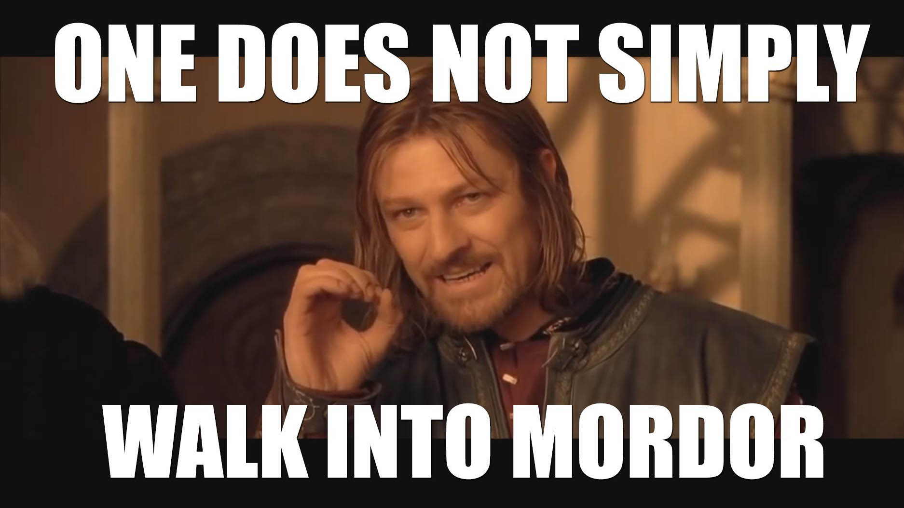
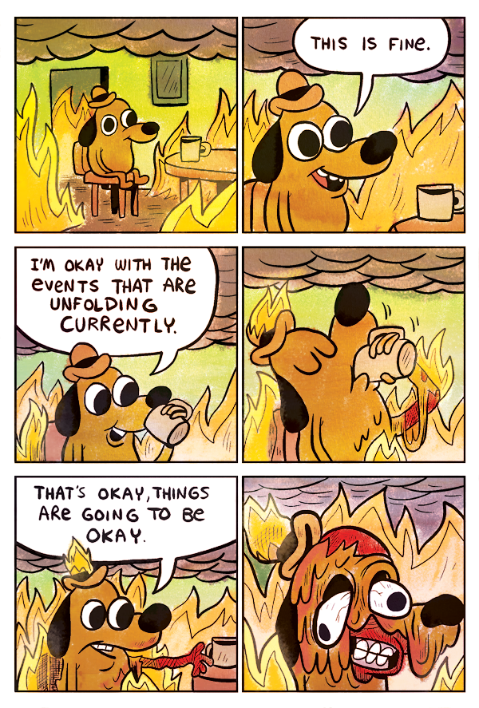
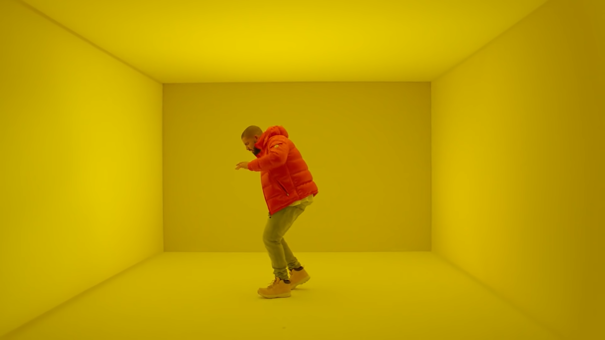
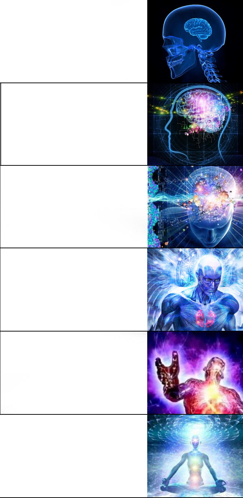

🤖 Не эльфы Санты, блядь

One does not simply
назвать автокомплит «AI-агентом»
- НЕ это: умный автокомплит, который знали ещё до рождения некоторых из присутствующих
- ЭТО: полноценный агент — мыслит, планирует, выполняет задачи, запускает команды
- Работает на специализированных мощных серверах, а не на вашем ноутбуке с перегревом
- Конкретно я плотно поигрался с Claude (в народе — «Клава»)
Неофициально — всё прекрасно работает.
💪 Гигачат: НЕОЖИДАННО НОРМ
- Начал не с Клавы — узнал что Сбербанк даёт Гигачат бесплатно, даже VSCode-плагин есть
- Первая задача: «напиши JSDoc к этой функции»
- Ожидал говно — получил отличный результат: аргументы, типы, описание, примеры
- 10 минут ручной работы → 1 минута с AI
- Результат ревью PR: AI нашёл реальные баги, которые я сам не заметил (замыленный глаз)
Гигачат Гигабанка
когда справился с задачей
👀 PR Review: AI не устаёт смотреть на твоё дерьмо
Я, когда ревьюирую
свой же PR через неделю
- Проблема: ревьюить свой код — пытка. Глаз замылен, мозг помнит «как должно быть» и не видит «как есть»
- AI-решение: агент читает код без предвзятости и без желания побыстрее закрыть PR
- Да, отмечает очевидное, обусловленное наследием
- НО иногда находит реальные логические ошибки и недостаточные валидации
- Ошибки, которые я бы поймал сам... если бы заметил
📱 Телеграм: 1000 каналов с мемасиками (и дубляжом)
- Подписан на миллион каналов с мемами, новостями, нейрослопом
- Проблема: одна новость — репостится везде. Инстасамка поссорилась с кем-то → 50 одинаковых постов
- Один мем с всратым котом — появляется ежедневно на 30 каналах
- Мечта: гномик-бот, который читает всё, репостит в одно место, убирает дубли и рекламу
- К снаряду подходил несколько раз — протокол телеги исторически запутан и страшен

API Telegram и я,
пытаюсь разобраться в вкладках каналов
🚀 Два дня вайб-кодинга: от нуля до продакшена
Я во время вайб-кодинга с Клавой
- Результат: рабочее приложение — отрефакторенное, с дашбордом, настройками и LLM для детекции рекламы
- Иногда Клава шуршала 10 минут и всё ломала. Но я всё равно двигался вперёд. Очень быстро.
📧 Почта: 2000 писем в день (99% — полная хуйня)
Я: [уставший девелопер]
Спам: [30-летняя почта]
Мечта:
[кнопка «УДАЛИТЬ К ЧЕРТЯМ»]
- Почта существует 15+ лет, письма не удаляю — пришло ~2000 в день, 99% спам
- Есть папки и правила — но создавать их больно и мучительно в любом клиенте
- Инбокс постоянно переполнен, потому что некогда настраивать новые правила
- Мечта: кнопка «Создать правило» прямо в письме с автозаполнением формы
И НАВСЕГДА ЗАБАНИТЬ ЭТОТ АДРЕС ЁБУЧИЙ»
📚 Верный ответ — это Верный Вопрос (с) Р.Шекли
- Рассказ «Верный вопрос» — сверхразум построил Ответчик, знающий всё
- Проблема: чтобы правильно задать вопрос — нужно знать большую часть ответа
- С AI то же самое: чёткая задача → быстрый качественный результат
- Размытое описание → хуйня на выходе, долгое ожидание, слитые токены
Это техническое задание для джуна,
у которого нет инициативы.
«Я не знаю, как описать задачу,
но это точно AI виноват»
✍️ Плохой промпт vs Хороший промпт

«Добавь авторизацию»
«Исправь баги в проекте»
«Напиши что-нибудь для фронтенда»
src/bot.py функция
handle_message() не обрабатывает пустые сообщения —
добавь проверку и верни "Введи текст"»«В
auth.js:145 — JWT не обновляется при истечении.
Исправь с помощью refresh-токена по схеме из
docs/auth.md»
💀 Проклятие Контекста: выбирай смерть

⚡ Контроль vs Скорость: ВЫБИРАЙ, СУКА
Я, когда разрешил Клаве
«все похожие команды»
- По умолчанию: каждое действие требует подтверждения
- Через 20 минут ты просто жмёшь Enter каждые 10 секунд, иногда даже не читая
- Потом разрешаешь «все похожие команды»...
- ...и через 15 минут Клава самостоятельно патчит что-то в node_modules
- Или находит «баг» в ядре ОС (воображаемый)
Это не шутка. Бэкапы — не опция.
🤪 Галлюцинации: она полезла в node_modules, блядь
Клава: «Я нашла баг в зависимости 0.3.14.legacy.patch»
- Даёшь задачу: «починить конкретный баг», описываешь как воспроизвести
-
Клава: сканирует твой код... лезет в
node_modules... читает обфусцированный код... - Вывод: «виноват баг в зависимости X» — начинает её успешно патчить
- Реальный баг? Где-то совсем в другом месте. Клава его даже не смотрела.
- Причина: LLM — не интеллект, это предсказание следующего токена по контексту
Не жди 15 минут работы впустую.
🗑️ Технический долг копится, сука
Клава и технический долг
указывают друг на друга
- Клава сама не будет рефакторить, писать тесты, удалять мёртвый код
- Если явно не требовать — всё идёт в один файл
- Итог без контроля: 40к строк в одном файле, никаких тестов, дублирование везде
- Решение: регулярно давать задачи на рефакторинг и написание тестов
- Или сразу ставить правила в
CLAUDE.md
напиши тесты»
🧠 Потеря владения кодом: система 1 vs система 2 (cognitive debt)
- По Канеману: Система 1 — быстрая и дешёвая. Система 2 — осознанная, но дорогая.
- Велик соблазн: не ревьюить то, что Клава написала
- Если не ревьюить — ты не понимаешь свой собственный код
- Через месяц: «что это вообще делает?» — о своём же проекте
- Решение: всегда читать и понимать изменения. Всегда.
не ошибки в коде, а потеря понимания того что происходит
«Подождите, это же
мой собственный код?!»
🪞 Зеркалирование: говно войдёт — говно выйдет
Я: «Клава, почему код такой кривой?» | Клава: «Я читала твой проект»
- Клава всегда сначала читает существующий код проекта — изучает стиль и парадигму
- Если проект написан криво — ожидать структурированного кода наивно
- AI зеркалит существующий стиль, включая все анти-паттерны
- Это работает и в обратную сторону: хороший код в проекте → хороший код от AI
Убери говно из проекта до того как пустить туда Клаву.
🔥 Энтропия: пиздец подкрался незаметно
Продуктивность x10, энтропия x100.
Всё по плану.
он их ускоряет нахуй
🔒 Deadlock: когда оба в тупике
- Пет-проект: почтовый клиент. Нашёл баг — не понимаю в чём причина
- Описываю Клаве: «вот симптомы, вот что происходит» — она тоже не понимает
- Пытаюсь объяснить точнее — но не могу, потому что сам не понимаю
- Клава предлагает 10 «решений» — все мимо. Я не могу направить — не вижу куда
- Классический deadlock: чтобы объяснить баг AI — нужно понять баг. Чтобы понять баг — нужна помощь AI.
Если знаний ноль — усиливать нечего.
Я и Клава пытаемся понять
кто из нас должен разобраться
👀 Лайфхак: дай Клаве глаза через логи
- Клава не видит твой браузер, десктоп, UI — она слепая
- Решение: добавь подробное логирование в файл — это её единственные глаза
- Клава умеет читать лог-файл и даже tail'ить его в реальном времени
- Просишь: «добавь логи → я воспроизведу баг → прочитай лог и найди причину»
- По сути: printf-debugging, но анализирует не ты, а AI
был найден именно так — через логи.
> добавь подробные логи
в обработку IMAP-ответов
пиши в /tmp/mail.log
// воспроизвожу баг...
$ claude
> прочитай /tmp/mail.log
и найди почему письма
дублируются
🎯 Клава: «Нашла!
UID не сбрасывается
при смене папки»
🚀 Клава-девопс: 10 минут до прода
Клава настраивает nginx
на твоём сервере
- Клава отлично заменяет девопса на небольшом проекте
- Говоришь: «вот SSH-креды, поставь nginx + postgres, задеплой проект, запроси сертификат у certbot»
- Результат через 5-10 минут: рабочий скрипт для деплоя и живой проект на проде
поставь nginx, postgres, задеплой мой Flask-проект
домен: myapp.example.com
не облажайся"
# 8 минут спустя: https://myapp.example.com ✅
в 11 вечера перед релизом
🚧 AI не сделает разработку быстрее
- AI ускоряет написание кода на ~40% — но код это не бутылочное горлышко
- Реальные тормоза: неясные требования, ревью-очереди, страх деплоя, отсутствие фидбека
- Больше кода быстрее = больше PR в очереди, а не быстрее до прода
- «Вы не ускорили ничего. Вы создали пробку и назвали это продуктивностью»
- Фичи проводят 80% времени в ожидании: ревью, CI, QA, окна деплоя
- Конкурентное преимущество — не у тех кто пишет код быстрее, а у тех кто понимает что строить и быстро доставляет до юзера
«If you thought the speed of writing code was your problem»
🎯 ИТОГО: хватит быть неолуддитом
Я после того как понял что AI реально полезен
💸 Qwen локально: халява нищебродов
- Клава дорогая — Anthropic хочет реальных денег за токены
- Можно запустить qwen-coder локально через Ollama/LMStudio
- Настроить Claude Code так, чтобы он обращался к локальной модели вместо Anthropic
- Цена: стоимость электричества + нагрев GPU
- Качество: хуже, но для простых задач — вполне ок
{
"baseURL": "http://localhost:11434/v1",
"model": "qwen2.5-coder:32b",
"apiKey": "ollama"
}
# Profit! Клава теперь бесплатная
Я, запустивший Qwen32B
на локальном железе
ВОПРОСЫ?
Вы и ваш коллега когда оба используете одну и ту же Клаву
github.com/k41n/ai_pres